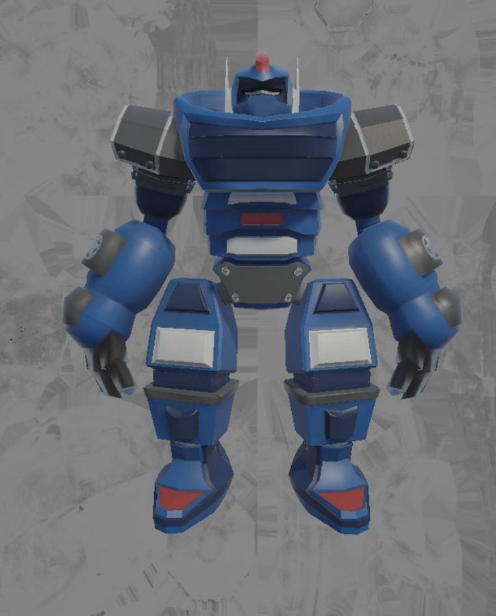
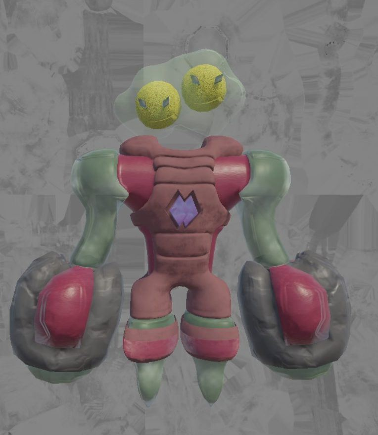

Beyond TCG: Alien vs Mech
A trading card game where physical cards come to life on a digital screen.
Left: a battle animation I made. Right: placing a card on The Board brings the character onto the screen.
The game
Beyond TCG is an experimental card game that brings physical cards onto a digital screen. Cards have conductive glyphs on the back. When a player places one on our console, The Board, it recognizes the card, renders it on the screen, tracks the game and plays the visuals. Instead of imagining a spell destroying enemy units, players watch it happen.
The project also pushes The Board itself. Games on it were built for small game pieces, so we are testing how those pieces can become flat cards that you can shuffle, stack into a deck and keep in a binder. We have tried many card and glyph materials to make physical cards work with the digital system.
My role
I'm the 3D character artist and animator. I help design the characters, then model, rig and animate them, so each card turns into a living character on the board. The first set is mechs vs aliens.
- Project
- ETC semester project, Fall 2026
- Platform
- The Board, a table-sized touch screen that reads physical cards
- My role
- Character design, modeling, rigging, animation
- Status
- In progress, more characters coming
Characters

Mech

Alien
Saturn Alien
Alien vs Mech, step by step
From a gray blockout of the shot to the final manga-style frame.
More work: 3D & Animation, Film & Content